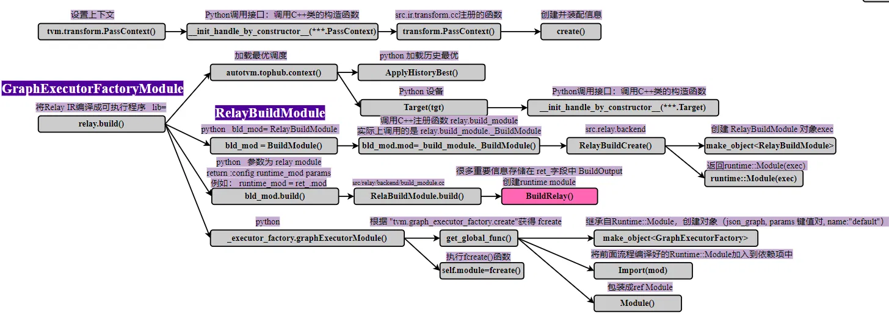

# 前言
本系列文章将从代码和流程图入手，详细介绍 TVM AI 编译器的编译流程。本文章为第三篇，对应的 TVM 版本为当前最新版本 1.7。
网络上有不少 TVM 工程的教程资源，如果本博客也是其他教程的简单重复的话，则网络的角落里又多了一份纯粹的空间占用者。所以我在想，本文章有什么特点才值得一看呢？我觉得有两个优点: 1、本文从代码出发，不会泛泛而谈，能够从细节了解 TVM；2、自认为结构流程图画的不错，能够从整体上把握 TVM 的脉络。所以，也许值得一看呢。
本篇文章介绍 TVM 对模型的编译流程。文章 《【TVM】通过代码学习编译流程【2】模型转换》 已经介绍了 onnx 模型转换为 TVM 高级中间表示 Relay IRModule 的过程，得到了 Relay IRModule。本篇文章则介绍该模型后续的编译从 Relay IRModule 转换为 GraphExecutorFactory 的过程。
因为代码量巨大，模型编译会分成若干篇文章进行解析。
作为初学者，错误在所难免，还望不吝赐教。
# Python 脚本
这里提供一个简单的 Python 脚本，调用 TVM Python 前端，实现 onnx 模型的编译过程。tvm 通过代码学习编程流程系列文章将基本采用这个脚本帮助追踪代码。
import onnx | |
from PIL import Image | |
import numpy as np | |
import tvm.relay as relay | |
import tvm | |
from tvm.contrib import graph_executor | |
###################################### 路径信息 ########################################## | |
model_path = "/home/xianmu/module/resnet18.onnx" | |
save_path = "/home/xianmu/module/pythonSave/" | |
onnx_model = onnx.load(model_path) | |
################################## 图片信息 ############################################## | |
img_path = "/home/xianmu/.tvm_test_data/data/imagenet_cat.png" | |
# Resize it to 224x224 | |
resized_image = Image.open(img_path).resize((224, 224)) | |
img_data = np.asarray(resized_image).astype("float32") | |
# Our input image is in HWC layout while ONNX expects CHW input, so convert the array | |
img_data = np.transpose(img_data, (2, 0, 1)) | |
# Normalize according to the ImageNet input specification | |
imagenet_mean = np.array([0.485, 0.456, 0.406]).reshape((3, 1, 1)) | |
imagenet_stddev = np.array([0.229, 0.224, 0.225]).reshape((3, 1, 1)) | |
norm_img_data = (img_data / 255 - imagenet_mean) / imagenet_stddev | |
# Add the batch dimension, as we are expecting 4-dimensional input: NCHW. | |
img_data = np.expand_dims(norm_img_data, axis=0) | |
#################################### 模型编译 ########################################### | |
input_name = "data" | |
target = tvm.target.Target(target="llvm", host="llvm") | |
shape_dict = {input_name: img_data.shape} | |
mod, params = relay.frontend.from_onnx(onnx_model, shape_dict, export_node_renamed_model_path=save_path) # 创建 IRModule 高级 Relay IR | |
with tvm.transform.PassContext(opt_level=3): | |
lib = relay.build(mod, target=target, params=params) # 创建 GraphExecutorFactoryModule | |
####################################### 模型保存 ######################################## | |
# save | |
# 保存编译后的库文件（.so） | |
lib_fname = save_path + "mod.so" | |
lib.get_lib().export_library(lib_fname) | |
# 保存模型参数（.params） | |
params_fname = save_path + "mod.params" | |
with open(params_fname, "wb") as param_file: | |
param_file.write(relay.save_param_dict(lib.get_params())) | |
# 保存 JSON 格式的计算图（.json） | |
json_fname = save_path + "mod.json" | |
with open(json_fname, "w") as json_file: | |
json_file.write(lib.get_executor_config()) | |
dev = tvm.device(str(target), 0) | |
module = graph_executor.GraphModule(lib["default"](dev)) # graph_executor.GraphModule | |
############################ 运行 ########################################## | |
module.set_input(input_name, img_data) | |
module.run() | |
output_shape = (1, 1000) | |
tvm_output = module.get_output(0, tvm.nd.empty(output_shape)).numpy() | |
print(tvm_output) |
# TVM 编译
下面的函数实现了 TVM 的编译过程。该过程的输入 mod, target=target, params=params 分别是 Relay IRModule 中间表示， target 目标设备， params 参数。
params 参数在上一篇文章中有讲到， freeze_params=True 的情况下该 params 为空的字典。
with tvm.transform.PassContext(opt_level=3): | |
lib = relay.build(mod, target=target, params=params) # 创建 GraphExecutorFactoryModule |
下图是 relay.build() 函数的总体流程图。

# Pass 上下文 PassContext
Pass ：在编译器设计中，“pass” 通常指的是编译过程中的一轮或多轮处理。一个 “pass” 是指对源代码或者其某种表示形式（如抽象语法树或中间表示）进行一次完整的扫描或处理。
with tvm.transform.PassContext(opt_level=3) 代码初始化了 TVM 转换 Pass 的上下文。
@tvm._ffi.register_object("transform.PassContext") | |
class PassContext(tvm.runtime.Object): | |
"""The basis where a Relay optimization/analysis runs on. | |
Each pass context contains a number of auxiliary information that is used | |
to help an optimization pass. Such information includes the error reporter | |
to record the errors of during the optimization, etc. | |
opt_level : Optional[int] | |
The optimization level of this pass. | |
required_pass : Optional[Union[List[str], Set[str], Tuple[str]]] | |
The list of passes that are required by a certain pass. | |
disabled_pass : Optional[Union[List[str], Set[str], Tuple[str]]] | |
The list of passes that are disabled. | |
instruments : Optional[Sequence[PassInstrument]] | |
The list of pass instrument implementations. | |
config : Optional[Dict[str, Object]] | |
Additional configurations for specific passes. | |
trace: Optional[relax.tuning.Trace] | |
Initial trace for trace mode. | |
trace_stack: Optional[List[relax.tuning_api.Trace]] | |
Initial trace stack for trace mode. | |
make_traceable: Optional[List[str]] | |
List of passes to make traceable. | |
num_evals: int | |
initial number of evaluations conducted in the pipeline. | |
tuning_api_database: Optional[relax.tuning_api.JSONDatabase] | |
""" | |
def __init__( | |
self, | |
opt_level=2, | |
required_pass=None, | |
disabled_pass=None, | |
instruments=None, | |
config=None, | |
trace=None, | |
trace_stack=None, | |
make_traceable=None, | |
num_evals=0, | |
tuning_api_database=None, | |
): | |
required = list(required_pass) if required_pass else [] | |
if not isinstance(required, (list, tuple)): | |
raise TypeError("required_pass is expected to be the type of " + "list/tuple/set.") | |
disabled = list(disabled_pass) if disabled_pass else [] | |
if not isinstance(disabled, (list, tuple)): | |
raise TypeError("disabled_pass is expected to be the type of " + "list/tuple/set.") | |
instruments = list(instruments) if instruments else [] | |
if not isinstance(instruments, (list, tuple)): | |
raise TypeError("instruments is expected to be the type of " + "list/tuple/set.") | |
# Convert to Map<String, bool> | |
# TODO(sunggg): Replace this to Set equivalent if exists | |
make_traceable = {name: True for name in make_traceable} if make_traceable else None | |
if not trace_stack: | |
trace_stack = [trace] if trace else [] | |
config = config if config else None | |
self.__init_handle_by_constructor__( | |
_ffi_transform_api.PassContext, | |
opt_level, | |
required, | |
disabled, | |
instruments, | |
config, | |
trace_stack, | |
make_traceable, | |
num_evals, | |
tuning_api_database, | |
) |
上述代码可以看到，PassContext 在初始化的时候， opt_level pass 优化级别，可以指定 required_pass 需要的 pass 列表， disabled_pass 需要排除的 pass 列表等。
之后调用 self.__init_handle_by_constructor__() 函数创建 PassContext 类。其中 _ffi_transform_api.PassContext 是构造函数，其余参数是构造函数的参数。 self.__init_handle_by_constructor__() 调用 C++ 后端注册函数 "transform.PassContext" ，该函数如下所示：
TVM_REGISTER_GLOBAL("transform.PassContext") | |
.set_body_typed([](int opt_level, Array<String> required, Array<String> disabled, | |
Array<instrument::PassInstrument> instruments, | |
Optional<Map<String, ObjectRef>> config, Array<ObjectRef> trace_stack, | |
Optional<Map<String, Bool>> make_traceable, int num_evals, | |
Optional<ObjectRef> tuning_api_database) { | |
auto pctx = PassContext::Create(); | |
pctx->opt_level = opt_level; | |
pctx->required_pass = std::move(required); | |
pctx->disabled_pass = std::move(disabled); | |
pctx->instruments = std::move(instruments); | |
if (config.defined()) { | |
pctx->config = config.value(); | |
} | |
pctx->trace_stack = std::move(trace_stack); | |
pctx->make_traceable = std::move(make_traceable); | |
pctx->num_evals = std::move(num_evals); | |
pctx->tuning_api_database = std::move(tuning_api_database); | |
PassConfigManager::Global()->Legalize(&(pctx->config)); | |
return pctx; | |
}); |
通过 TVM_REGISTER_GLOBAL("transform.PassContext") 注册为全局函数，接收所有参数，通过 auto pctx = PassContext::Create(); 创建 PassContext 类。
# 编译过程 bld_mod = BuildModule ()
创建完 Pass 上下文之后，接下来在回到 Python 脚本，看 lib = relay.build(mod, target=target, params=params) ，该函数将 Relay IRModule 编译成为 GraphExecutorFactoryModule ，对应于 C++ 后端的 GraphExecutorFactory 类。
relay.build() 函数如下所示：其中 ir_mod 是前述模型转换得到的 Relay IRModule， target 是计划部署的加速硬件或设备 如 llvm cuda metal 等，甚至可以指定多种加速硬件或设备。 target_host 是指定主机端（通常是 CPU）的编译目标，例如当 target 是一个设备（如 GPU）时，通常还需要一些 cpu 来处理与设备驱动程序的交互、内存分配等任务。
def build( | |
ir_mod, # Relay IRModule | |
target=None, # 计划部署的加速硬件或设备 如 llvm cuda metal 等 | |
target_host=None, # 指定主机端（通常是 CPU）的编译目标 | |
executor=Executor("graph"), | |
runtime=Runtime("cpp"), | |
workspace_memory_pools=None, | |
constant_memory_pools=None, | |
params=None, | |
mod_name="default", | |
): | |
"""Helper function that builds a Relay function to run on TVM graph executor. | |
Parameters | |
---------- | |
ir_mod : :py:class:`~tvm.IRModule` | |
The IR module to build. Using relay.Function is deprecated. | |
target : None, or any multi-target like object, see Target.canon_multi_target | |
For homogeneous compilation, the unique build target. | |
For heterogeneous compilation, a dictionary or list of possible build targets. | |
Defaults to the current target in the environment if None. | |
target_host : None, or any target like object, see Target.canon_target | |
Host compilation target, if target is device. | |
executor : Optional[Executor] | |
The executor configuration with which to build the model. | |
Defaults to "graph" if no executor specified. | |
runtime : Optional[Runtime] | |
Runtime configuration to use when building the model. | |
Defaults to "cpp" if no runtime specified. | |
workspace_memory_pools : Optional[WorkspaceMemoryPools] | |
The object that contains an Array of WorkspacePoolInfo objects | |
that hold properties of read-write workspace pools that could be | |
used by the inference. | |
constant_memory_pools : Optional[ConstantMemoryPools] | |
The object that contains an Array of ConstantPoolInfo objects | |
that hold properties of read-only pools that could be | |
used by the inference. | |
params : dict of str to NDArray | |
Input parameters to the graph that do not change | |
during inference time. Used for constant folding. | |
mod_name: Optional[str] | |
The module name we will build | |
Returns | |
------- | |
factory_module : tvm.relay.backend.executor_factory.ExecutorFactoryModule | |
The runtime factory for the TVM graph executor. | |
""" | |
if not isinstance(ir_mod, (IRModule, _function.Function)): | |
raise ValueError("Type of input parameter mod must be tvm.IRModule") | |
if isinstance(ir_mod, _function.Function): | |
if params: | |
ir_mod = bind_params_by_name(ir_mod, params) | |
ir_mod = IRModule.from_expr(ir_mod) | |
warnings.warn( | |
"Please use input parameter mod (tvm.IRModule) " | |
"instead of deprecated parameter mod (tvm.relay.function.Function)", | |
DeprecationWarning, | |
) | |
raw_targets = Target.canon_multi_target_and_host(Target.target_or_current(target), target_host) | |
assert len(raw_targets) > 0 | |
target_host = raw_targets[0].host | |
# If current dispatch context is fallback context (the default root context), | |
# then load pre-tuned parameters from TopHub | |
if isinstance(autotvm.DispatchContext.current, autotvm.FallbackContext): | |
tophub_context = autotvm.tophub.context(list(raw_targets)) | |
else: | |
tophub_context = autotvm.utils.EmptyContext() | |
with tophub_context: | |
bld_mod = BuildModule() | |
graph_json, runtime_mod, params = bld_mod.build( | |
mod=ir_mod, | |
target=raw_targets, | |
params=params, | |
executor=executor, | |
runtime=runtime, | |
workspace_memory_pools=workspace_memory_pools, | |
constant_memory_pools=constant_memory_pools, | |
mod_name=mod_name, | |
) | |
func_metadata = bld_mod.get_function_metadata() | |
devices = bld_mod.get_devices() | |
lowered_ir_mods = bld_mod.get_irmodule() | |
executor_codegen_metadata = bld_mod.get_executor_codegen_metadata() | |
if executor.name == "aot": | |
executor_factory = _executor_factory.AOTExecutorFactoryModule( | |
ir_mod, | |
lowered_ir_mods, | |
raw_targets, | |
executor, | |
runtime, | |
runtime_mod, | |
mod_name, | |
params, | |
func_metadata, | |
executor_codegen_metadata, | |
devices, | |
) | |
elif executor.name == "graph": | |
executor_factory = _executor_factory.GraphExecutorFactoryModule( | |
ir_mod, | |
raw_targets, | |
executor, | |
graph_json, | |
runtime_mod, | |
mod_name, | |
params, | |
func_metadata, | |
) | |
else: | |
assert False, "Executor " + executor + " not supported" | |
return executor_factory |
简单看下流程：
if not isinstance(ir_mod, (IRModule,_function.Function)) 检查输入模型的格式，如果不是 IRModule,_function.Function 中的一个，报错！
if isinstance(ir_mod, _function.Function) 则检查如果是 _function.Function ，则帮助将该表达式重新封装为 Relay IRModule，并提醒你不要直接把 Function 表达式传进来，而是要先封装成 IRModule
if isinstance(autotvm.DispatchContext.current, autotvm.FallbackContext) 检查是否有提前计算的最优调度.
bld_mod = BuildModule() 初始化一个 class BuildModule(object) ，如下代码。
class BuildModule(object): | |
"""Build an IR module to run on TVM graph executor. This class is used | |
to expose the `RelayBuildModule` APIs implemented in C++. | |
""" | |
def __init__(self): | |
self.mod = _build_module._BuildModule() # C++ 类：RelayBuildModule | |
self._get_graph_json = self.mod["get_graph_json"] | |
self._get_module = self.mod["get_module"] | |
self._build = self.mod["build"] | |
self._optimize = self.mod["optimize"] | |
self._set_params_func = self.mod["set_params"] | |
self._get_params_func = self.mod["get_params"] | |
self._get_function_metadata = self.mod["get_function_metadata"] | |
self._get_executor_codegen_metadata = self.mod["get_executor_codegen_metadata"] | |
self._get_devices = self.mod["get_devices"] | |
self._get_irmodule = self.mod["get_irmodule"] | |
def build( | |
self, | |
mod, | |
target=None, | |
target_host=None, | |
executor=Executor("graph"), | |
runtime=Runtime("cpp"), | |
workspace_memory_pools=None, | |
constant_memory_pools=None, | |
params=None, | |
mod_name=None, | |
): | |
from tvm.auto_scheduler import is_auto_scheduler_enabled | |
from tvm.meta_schedule import is_meta_schedule_enabled | |
# pylint: enable=import-outside-toplevel | |
# Setup the params. | |
if params: | |
self._set_params(params) | |
# Build the IR module. If auto_scheduler is not enabled, | |
# then use the TOPI-defined schedule. | |
# Turn off AutoTVM config not found warnings if auto_scheduler is enabled. | |
old_autotvm_silent = autotvm.GLOBAL_SCOPE.silent | |
autotvm.GLOBAL_SCOPE.silent = ( | |
is_auto_scheduler_enabled() or is_meta_schedule_enabled() or old_autotvm_silent | |
) | |
mod_name = mangle_module_name(mod_name) | |
self._build( | |
mod, | |
target, | |
target_host, | |
executor, | |
runtime, | |
workspace_memory_pools, | |
constant_memory_pools, | |
mod_name, | |
) | |
autotvm.GLOBAL_SCOPE.silent = old_autotvm_silent | |
# Get artifacts | |
mod = self.get_module() | |
params = self.get_params() | |
executor_config = self.get_graph_json() if executor.name == "graph" else None | |
return executor_config, mod, params |
bld_mod 是 Python 中的类 BuildModule ，在初始化的时候：
self.mod = _build_module._BuildModule() 将 mod 字段注册为 C++ 后端类 RelayBuildModule 。具体过程是先调用 C++ 的注册全局函数 relay.build_module._BuildModule ，随即调用 RelayBuildModule 类创建函数 RelayBuildCreate 。
TVM_REGISTER_GLOBAL("relay.build_module._BuildModule").set_body([](TVMArgs args, TVMRetValue* rv) { | |
*rv = RelayBuildCreate(); | |
}); | |
runtime::Module RelayBuildCreate() { | |
auto exec = make_object<RelayBuildModule>(); | |
return runtime::Module(exec); | |
} |
RelayBuildModule Relay 模型创建类用于帮助创建 Relay IRModule。从下方 RelayBuildModule 类的具体内容中可以看到，该类的 GetFunction() 函数通过名字注册了许多函数，如 get_graph_json 、 get_module 、 build 等。
class RelayBuildModule : public runtime::ModuleNode { | |
public: | |
RelayBuildModule() = default; | |
PackedFunc GetFunction(const String& name, const ObjectPtr<Object>& sptr_to_self) final { | |
if (name == "get_graph_json") { | |
return PackedFunc( | |
[sptr_to_self, this](TVMArgs args, TVMRetValue* rv) { *rv = this->GetGraphJSON(); }); | |
} else if (name == "get_module") { | |
return PackedFunc( | |
[sptr_to_self, this](TVMArgs args, TVMRetValue* rv) { *rv = this->GetModule(); }); | |
} else if (name == "build") { | |
return PackedFunc([sptr_to_self, this](TVMArgs args, TVMRetValue* rv) { | |
ICHECK_EQ(args.num_args, 8); | |
this->Build(args[0], args[1], args[2], args[3], args[4], args[5], args[6], args[7]); | |
}); | |
} else if (name == "list_params") { | |
return PackedFunc( | |
[sptr_to_self, this](TVMArgs args, TVMRetValue* rv) { *rv = this->ListParamNames(); }); | |
} else if (name == "get_params") { | |
return PackedFunc( | |
[sptr_to_self, this](TVMArgs args, TVMRetValue* rv) { *rv = this->GetParams(); }); | |
} else if (name == "set_params") { | |
return PackedFunc([sptr_to_self, this](TVMArgs args, TVMRetValue* rv) { | |
Map<String, Constant> params = args[0]; | |
for (const auto& kv : params) { | |
this->SetParam(kv.first, kv.second->data); | |
} | |
}); | |
} else if (name == "get_devices") { | |
return PackedFunc([sptr_to_self, this](TVMArgs args, TVMRetValue* rv) { | |
*rv = this->executor_codegen_->ListDevices(); | |
}); | |
} else if (name == "get_irmodule") { | |
return PackedFunc([sptr_to_self, this](TVMArgs args, TVMRetValue* rv) { | |
*rv = this->executor_codegen_->GetIRModule(); | |
}); | |
} else if (name == "get_external_modules") { | |
return PackedFunc([sptr_to_self, this](TVMArgs args, TVMRetValue* rv) { | |
*rv = this->executor_codegen_->GetExternalModules(); | |
}); | |
} else if (name == "get_function_metadata") { | |
return PackedFunc([sptr_to_self, this](TVMArgs args, TVMRetValue* rv) { | |
*rv = this->executor_codegen_->GetFunctionMetadata(); | |
}); | |
} else if (name == "get_executor_codegen_metadata") { | |
return PackedFunc([sptr_to_self, this](TVMArgs args, TVMRetValue* rv) { | |
*rv = this->executor_codegen_->GetExecutorCodegenMetadata(); | |
}); | |
} else if (name == "optimize") { | |
return PackedFunc([sptr_to_self, this](TVMArgs args, TVMRetValue* rv) { | |
ICHECK_EQ(args.num_args, 2); | |
*rv = this->Optimize(args[0], args[1]); | |
}); | |
} else { | |
LOG(FATAL) << "Unknown packed function: " << name; | |
return PackedFunc([sptr_to_self, name](TVMArgs args, TVMRetValue* rv) {}); | |
} | |
} |
再回到 Python 前端类 BuildModule 。
在注册 self.mod 为 C 类 RelayBuildModule 后，又将 C 类 RelayBuildModule 的 get_graph_json 、 get_module 、 build 等功能函数一一赋给自身成员：即 self._get_graph_json = self.mod["get_graph_json"] ， self._get_module = self.mod["get_module"] 、 self._build = self.mod["build"] 等。
也就是说 C++ 类 RelayBuildModule 与 Python 前端类 BuildModule 功能一一对应，可以视为同一个类。
# 编译过程 bld_mod.build ()
继续看 relay.build() 函数， bld_mod.build() 函数完成了 Relay IRModule 编译的绝大多数流程。
bld_mod.build() 函数以 Relay IRModule ir_mod 为输入，输出 runtime::Module runtime_mod 。
graph_json, runtime_mod, params = bld_mod.build( | |
mod=ir_mod, | |
target=raw_targets, | |
params=params, | |
executor=executor, | |
runtime=runtime, | |
workspace_memory_pools=workspace_memory_pools, | |
constant_memory_pools=constant_memory_pools, | |
mod_name=mod_name, | |
) |
如前所述， bld_mod.build() 函数调用的就是 C++ 类 RelayBuildModule 的函数 build 。 build 流程包含了将 Relay IRModule 降级为低级中间表示 TIR，然后再转换为 Runtime::Module 的过程。
后续文章《【TVM】通过代码学习编译流程【4~...】》将介绍 C++ 类 RelayBuildModule 的 build 流程。
接下来的 _executor_factory.GraphExecutorFactoryModule() 构造函数将编译后的 runtime::Module runtime_mod 封装成 GraphExecutorFactory 类。
executor_factory = _executor_factory.GraphExecutorFactoryModule( | |
ir_mod, | |
raw_targets, | |
executor, | |
graph_json, | |
runtime_mod, | |
mod_name, | |
params, | |
func_metadata, | |
) |
该函数的参数已经提到不少了，剩下的:
graph_json ：Relay IRModule 经降级后低级中间表示 TIR Module 对应的图结构，用 json 表示。下面截取一段展示：
{ | |
"nodes": [ # 节点 | |
{ | |
"op": "null", | |
"name": "data", # 输入节点 | |
"inputs": [] # 输入节点没有其他输入 | |
}, | |
{ | |
"op": "tvm_op", | |
"name": "tvmgen_default_fused_layout_transform", # layout_transform节点 | |
"attrs": { # 属性 | |
"num_outputs": "1", | |
"num_inputs": "1", | |
"flatten_data": "0", | |
"func_name": "tvmgen_default_fused_layout_transform", | |
"src_layout": "NCHW", | |
"dst_layout": "NCHW3c", | |
"hash": "ba3dc2c95d3171fd" | |
}, | |
"inputs": [ # 以0号节点data为输入 | |
[ | |
0, | |
0, | |
0 | |
] | |
] | |
}, |
func_metadata ：函数的元数据信息，下面是打印的某个简单模型的元数据信息，包含 workspace_sizes、constant_sizes 等，tir_primfuncs 则是一系列降级后的低级中间表示 TIR 函数。
{"tvmgen_default_fused_layout_transform": FunctionInfoNode( | |
workspace_sizes={llvm -keys=cpu -mtriple=x86_64-pc-linux-gnu: 602112}, | |
constant_sizes={llvm -keys=cpu -mtriple=x86_64-pc-linux-gnu: 0}, | |
tir_primfuncs={llvm -keys=cpu -mtriple=x86_64-pc-linux-gnu: [一系列 @T.prim_func]})} |
_executor_factory.GraphExecutorFactoryModule() 类构造函数如下所示。
class GraphExecutorFactoryModule(ExecutorFactoryModule): | |
"""Graph executor factory module. | |
This is a module of graph executor factory | |
""" | |
def __init__( | |
self, | |
ir_mod, | |
target, | |
executor, | |
graph_json_str, | |
libmod, | |
libmod_name, | |
params, | |
function_metadata, | |
): | |
assert isinstance(graph_json_str, string_types) | |
fcreate = get_global_func("tvm.graph_executor_factory.create") | |
args = [] | |
for k, v in params.items(): | |
args.append(k) | |
args.append(ndarray.array(v)) | |
self.ir_mod = ir_mod | |
self.target = target | |
self.executor = executor | |
self.module = fcreate(graph_json_str, libmod, libmod_name, *args) | |
self.graph_json = graph_json_str | |
self.lib = libmod | |
self.libmod_name = libmod_name | |
self.params = params | |
self.iter_cnt = 0 | |
self.function_metadata = function_metadata |
通过 get_global_func("tvm.graph_executor_factory.create") 获取全局函数 —— GraphExecutorFactory 的构造函数 fcreate ，并执行，将其复制给 self.module 字段。
在 src/runtime/graph_executor/graph_executor_factory.cc 路径下可以找到注册的 C++ 全局函数 TVM_REGISTER_GLOBAL("tvm.graph_executor_factory.create") ，如下面所示。
TVM_REGISTER_GLOBAL("tvm.graph_executor_factory.create") | |
.set_body([](TVMArgs args, TVMRetValue* rv) { | |
std::unordered_map<std::string, tvm::runtime::NDArray> params; | |
for (size_t i = 3; i < static_cast<size_t>(args.size()); i += 2) { | |
std::string name = args[i].operator String(); | |
params[name] = args[i + 1].operator tvm::runtime::NDArray(); | |
} | |
auto exec = make_object<GraphExecutorFactory>(args[0], params, args[2]); | |
exec->Import(args[1]); | |
*rv = Module(exec); | |
}); |
其中 make_object<GraphExecutorFactory> 构建了 GraphExecutorFactory 类，并将 args[1] 注册到该类的 std::vector<Module> imports_; 字段底下。该字段存储当前模型所依赖的其他 runtime::Module，而 args[1] 指的是 fcreate(graph_json_str, libmod, libmod_name, *args) 函数的 libmod 参数，即前述 runtime::Module runtime_mod 。
所以 GraphExecutorFactory 类 依赖于 Relay IRModule 经【relay -> tir】【tir -> runtime】过程得到的 runtime_mod 。
# 后记
本博客目前以及可预期的将来都不会支持评论功能。各位大侠如若有指教和问题，可以在我的 github 项目 或随便一个项目下提出 issue，并指明哪一篇博客，我看到一定及时回复！